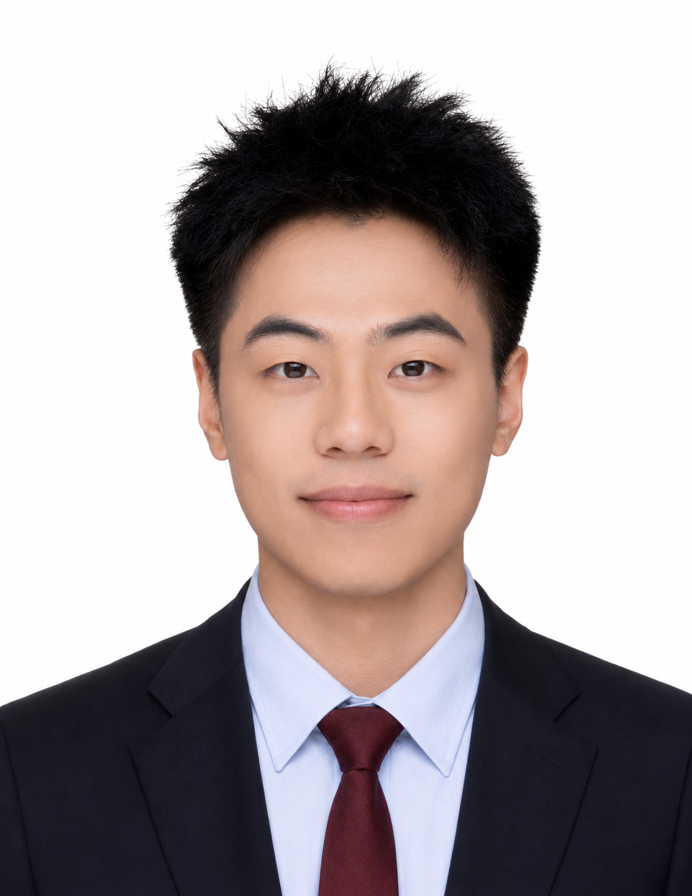

北京理工大学机械工程专业博士研究生（硕博连读），师从毕路拯教授。研究方向聚焦多模态深度学习、跨模态特征对齐、复杂声学场景信号理解、脑启发AI架构。以第一作者在 Cyborg and Bionic Systems（Science 旗下期刊，IF=18.2）、IEEE TNSRE 等顶级期刊发表多篇论文，拥有多项国家发明专利。熟练掌握 PyTorch、Transformer、Flow Matching、跨模态注意力对齐 等核心技术，具备模型轻量化与嵌入式实时部署（毫秒级推理）的工程落地能力。作为项目负责人率队夺得中国国际"互联网+"大学生创新创业大赛全国金奖，入选中国科协青年科技人才培育工程。
研究方向：多模态深度学习 / 跨模态特征对齐 / 脑启发AI架构 / 复杂声学场景信号理解
主修课程：高级人工智能、高级机器学习、先进控制工程、数字图像处理与模式识别、矩阵分析、科学与工程计算、复变函数与积分变换
保研（综合排名 3/101）
创始人（法人）· 项目总负责人
主导创立科技公司，将实验室前沿算法成果（多模态感知交互系统）进行产品化探索与商业验证。全面负责项目的整体规划、团队构建、技术研发与外部资源对接，成功将学术算法转化为具备完整展示能力的产品原型。作为项目总负责人与路演主讲人，带领团队获得第九届中国国际"互联网+"大学生创新创业大赛全国金奖。
多模态深度学习 · 跨模态对齐 · 生成模型 · 工程化部署全栈实践
"自驱力强、快速学习、复杂问题拆解。具备从实验设计→数据集构建→算法创新→模型训练→工程化部署→顶级期刊投稿的完整研究全流程经验。擅长多模态深度学习、跨模态特征对齐、复杂声学场景信号理解、生成模型（Flow Matching/Diffusion）等方向。拥有模型轻量化与嵌入式实时部署的工程落地能力。对语音大模型、多模态理解与生成等前沿方向有强烈兴趣与持续投入的技术热情。"